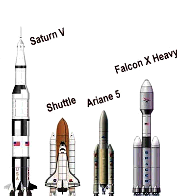
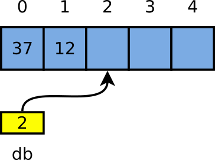

1Emlékeztető: feladatok és eszközök
Szekvencia
printf("Mi a szám? ");
scanf("%d", &a);
a = a*a;
printf("Négyzete: %d", a);
Elágazás
if (szam > 0)
printf("pozitív");
else
printf("nem pozitív");
Ciklus
for (i = 1; i <= 10; i = i+1)
printf("i = %d\n", i);
Algoritmus
- Programozó: algoritmust tervez a feladat megoldására
- Többé-kevésbé általános
- Véges számú lépésben fut
Vezérlési szerkezetek
- Számítási folyamat leírása: mi a lépések sorrendje
- Már ismeritek a működést, sejtitek, mi lesz az eredmény
Példák az általánosság fogalmához:
- Prímszámok: szám → igaz/hamis. Első 100 prímet tudja? Jó, de nem elég általános. Osztók próbálgatása: ez jobb megoldás!
- Böngészőprogram: leíró kód → megjelenített oldal. Bemenet: szöveg, színek, margók, betűméretek, … Kimenet: a formázott oldal képe.
2Az állásinterjús kérdés: fizz buzz
Az alábbi feladatot gyakran állásinterjúkon is feladják, és meglepő, hogy mennyiszer elrontják a jelentkezők. (Lásd
itt és
itt.)
Hogyan függenek össze a feltételek? Hogyan kell egymásba tenni a vezérlési szerkezeteket?
Jó-e az, ha leírjuk a három vizsgálatot (3-mal, 5-tel, mindkettővel), mindenhova közé else-t téve?
Nem lenne jó itt felsorolni az összes rossz megoldást, és megmagyarázni mindegyikről, hogy mi
a bajuk – az egy egyszerű nyomkövetéssel észrevehető. Mindenki kipróbálhatja magának!
fizz buzz 11 fizz 13 14 fizzbuzz 16
1 2 fizz 4 buzz fizz 7 8
Fizz buzz: a feladat
Mondjuk sorban a számokat, de ha
- 3 többszöröse, a szám helyett: „fizz”
- 5 többszöröse, akkor „buzz”
- mindkettőé, akkor „fizzbuzz”
Az oszthatóság vizsgálata
egyenlő-e
maradék
/* osztható? a maradék nulla? */
if (szam % 3 == 0)
printf("fizz\n");
3Fizz buzz: 3-mal és 5-tel is
„és”: mindkét
feltétel teljesül
/* 3-mal és 5-tel is osztható */
if (szam % 3 == 0 && szam % 5 == 0)
printf("fizzbuzz\n");
Vigyázat! Melyik feltétel is teljesül 15-nél???
Azért kell vigyázni, mert az egyes kiírások (fizz, buzz, fizzbuzz, szám) feltételei átfedik egymást. Ha egy szám 3-mal és 5-tel is osztható, akkor igaz az a kijelentés is, hogy 5-tel osztható. A feltételek nem zárják ki egymást! Így a programban két lehetőségünk van: vagy leírjuk azokat a feltételeket, amelyek teljesen kizárják egymást (pl. 3-mal és 5-tel is osztható; 3-mal igen, de 5-tel nem osztható stb.), vagy olyan vezérlési szerkezetet írunk, amely figyelembe veszi a halmaz–részhalmaz kapcsolatokat. Az utóbbi esetben az sem mindegy, hogy az elágazásokban melyik feltételt vizsgáljuk előbb. Ha a két oszthatóság együtt nem teljesül, még mindig lehet, hogy külön-külön valamelyik igen!
Az utóbbi elven működő megoldás:
#include <stdio.h>
int main(void) {
int szam;
for (szam = 1; szam <= 20; szam = szam+1)
if (szam % 3 == 0 && szam % 5 == 0)
printf("fizzbuzz\n");
else
if (szam % 3 == 0)
printf("fizz\n");
else
if (szam % 5 == 0)
printf("buzz\n");
else
printf("%d\n", szam);
return 0;
}
Néhány C nyelvtani apróság a fenti programmal kapcsolatban. Mivel minden feltétel igaz és hamis ágában csak egy további utasítás van (egy következő if is egy utasításnak
számít), ezért itt nem volt szükség az utasítások {} blokkba helyezésére.
A C szabályai szerint az
else utasítás mindig az azt megelőző, legközelebbi if-hez tartozik. Ha ezt módosítani
szeretnénk, az természetesen lehetséges, az utasítások megfelelő {} blokkba helyezésével. Így:
if (feltétel1) {
if (feltétel2)
printf("akkor, ha feltétel1 és feltétel2");
} else
printf("akkor, ha nem feltétel1");
Sokan egyébként az önálló utasításokat is blokkba teszik, és nem írnak a fentihez hasonló kódot. Néha hosszabb kicsit úgy, de sok előnye van.
5Sorozatok és tételek
Programozási tételek
Általánosságban megfogalmazott algoritmusok; mindig kicsit átalakítjuk a konkrét feladatunkhoz.
Sorozatok (nem a Dallas)
Ezek a tételek általában sorozatokkal, sok feldolgozandó elemmel szoktak foglalkozni, pl. számsorok, névsorok, kirajzolandó alakzatok. A bemutatáshoz ezért most választunk egy konkrét példát: számsorokkal fogunk foglalkozni.
- Számsorok: az elemszám kétféleképpen lehet adott.
- Adott hosszúságú. A sorozat hossza előre adott.
Pl. 4 elem: 9, 1, 3, 5 - Végjeles. A sorozat végét egy speciális érték
jelöli.
Pl. 9, 1, 3, 5, -1
6Összegzés tétele
Összesítsük a rendeléseket!
Írjunk programot, amely összegzi a fogyasztásunkat: a felhasználótól kapott pozitív, egész számokat összegez. Addig, amíg −1-et nem kap.
Összegzés tétele
összeg = 0 akkumulátor
CIKLUS AMÍG van még szám, ADDIG
szám = következő elem
összeg = összeg + szám
CIKLUS VÉGE
Az „akkumulátor” változó az, amelyikben összegyűlik, akkumulálódik az eredmény. Ezt először nullázzuk, utána minden feldolgozott számot hozzáadjuk. Minden iteráció végén az addig látott számok összegét fogja így tartalmazni. Ha esetleg egyszer sem ment volna be a ciklusba, akkor pedig nullát.
A végjeles sorozat kezelése: a beolvasás helye
- A ciklus feltétele ez lesz: AMÍG szám ≠ −1, …
- Ez a beolvasott számtól függ → már az első előtt lennie kell beolvasásnak
- De mindig kell egy új szám → a cikluson belül is
Helyes megoldás (a tétel alkalmazása)
különleges”
összeg = 0 BE: szám első CIKLUS AMÍG szám ≠ −1, ADDIG összeg = összeg+szám BE: szám következő (többi) CIKLUS VÉGE
Ez egy nagyon fontos rész. Itt a ciklus működését meg kell érteni! A ciklus egy utasítássorozatot ismétel, amíg egy feltétel fennáll. A ciklusfeltétel ellenőrzi azt, hogy a kapott szám −1-e, vagy nem. Mivel ez egy elöltesztelő ciklus, ezért ennek a feltételnek az ellenőrzése a ciklusba belépés előtt fog megtörténni. Ez azt jelenti, hogy a ciklus első elérésekor már rendelkeznünk kell egy számmal, ami a felhasználótól származik, vagyis kell lennie egy beolvasásnak a ciklus előtt.
Namármost, ha a feltétel igaz, akkor bekerül a végrehajtás a ciklus belsejébe. Ilyenkor éppen van egy számunk, amit a billentyűzetről kaptunk, és ami nem −1, ezért azt hozzá kell adnunk az összeghez. Itt azt általánosan megfogalmazott összegzés tételét át kell alakítanunk a jelenlegi, konkrét feladatunkhoz, hiszen a ciklustörzs nem egy beolvasással kezdődik. Helyette az összeadással, mert a számunk már megvan.
A ciklustörzs egy újabb beolvasással végződik. Ami első ránézésre olyan, mintha a következő beolvasott számmal már nem csinálnánk semmit, de ez nincs így! A ciklustörzs végrehajtása után a vezérlés újra a ciklusfeltétel ellenőrzéséhez kerül. Ilyenkor már az új számot fogja ellenőrizni a feltétel újbóli kiértékelése – és ha igaznak adódott, vagyis ha a szám nem −1, akkor már az új szám fog az összeghez hozzáadódni. A ciklustörzs végén álló beolvasás a következő iteráció számára készíti elő a terepet. Vegyük észre, hogy ilyenkor a „terep” pont ugyanúgy néz ki, mint az első végrehajtás előtt. Van egy számunk, amit meg kell vizsgálni, hogy −1-e, és ha nem, akkor hozzáadni az összeghez.
A fentiek végiggondolását kezdő és haladó programozóknak is ajánljuk. Ennek a problémának ez A Szép Megoldása.
nem egyenlő
#include <stdio.h>
int main(void) {
int osszeg, szam;
printf("Kérem a számokat, -1: vége\n");
osszeg = 0; // elején nulla
scanf("%d", &szam);
while (szam != -1) {
osszeg = osszeg+szam; // ha van szám, hozzáad
scanf("%d", &szam);
}
printf("Összeg: %d\n", osszeg);
return 0;
}
7Összegzés? Faktoriális!
Mi a különbség az összegzés és a faktoriális számítása között programozási szempontból? Szinte semmi!
a=a*b → a*=b
a=a+b → a+=b
stb.
#include <stdio.h>
int main(void) {
int i, n, szorzat;
printf("Melyik szám a faktoriálisa? ");
scanf("%d", &n);
szorzat = 1;
for (i = 1; i <= n; i += 1)
szorzat *= i; // szorzat = szorzat*i
printf("%d faktoriálisa %d\n", n, szorzat);
return 0;
}
Más a művelet, de ugyanaz az elv: ciklusban akkumulálunk!
Az összegzés és a faktoriális egymás mellett:
összeg=0
CIKLUS AMÍG van szám, ADDIG
szám = következő elem
összeg = összeg+szám
CIKLUS VÉGE
szorzat=1
CIKLUS i=1-től n-ig
szorzat = szorzat*i
CIKLUS VÉGE
Csak lecseréltük:
- A kezdeti értéket 0-ról 1-re
- Az összeadást szorzásra
- A ciklust számlálásosra (1→n, ez előre adott hosszúságú sorozat)
- A számot nem kell beolvasni, hiszen benne van az i változóban
Algoritmikai szempontból a kettő tökéletesen ugyanaz. A szorzat változó tölti be az akkumulátor
szerepét, az i pedig az iterátor, amelyre a ciklus szervezése épül.
8Számlálás tétele: osztók száma
Feladat
Számoljuk meg, egy számnak hány osztója van (1 és saját maga is.)
Megoldás gondolatmenete
- Legegyszerűbb: próbálgatás
- CIKLUS 1-től a számig
- HA osztható, AKKOR növelünk egy számlálót
- A számláló kezdeti értéke 0
Vegyük észre: ez egy előre adott hosszúságú sorozat. 1-től az adott számig kell eljutni.
Számlálás tétele
db = 0
CIKLUS AMÍG van még szám, ADDIG
szám = következő elem
HA igaz a feltétel szám-ra, AKKOR melyikeket?
db = db+1
FELTÉTEL VÉGE
CIKLUS VÉGE
További példák
- Hány páros számot gépeltek be?
- Hány osztója van egy számnak?
- Hány „e” betű van benne?
#include <stdio.h>
int main(void) {
int szam, oszto, db;
printf("Kérem a számot: ");
scanf("%d", &szam);
db = 0; // kezdetben 0
for (oszto = 1; oszto <= szam; oszto += 1)
if (szam % oszto == 0)
db += 1; // ha ez osztója, +1
printf("Összesen %d osztója van.\n", db);
return 0;
}
9A karakter típus – feladat
Feladat
Számoljuk meg, a begépelt szövegben hány „e” betű van!
Karakterek (character)
0123456789
30 ␣!"#$%&'
40 ()*+,-./01
50 23456789:;
60 <=>?@ABCDE
70 FGHIJKLMNO
80 PQRSTUVWXY
90 Z[\]^_`abc
100 defghijklm
110 nopqrstuvw
120 xyz{|}~
- Betű → kódszám hozzárendelés
- Minden betűhöz, számjegyhez, írásjelhez egy kódszámot rendelnek
- A gépnek szám: belső ábrázolás, nekünk betű: külső ábrázolás
- Többféle kódolás (táblázat) létezik
- Többféle kódolás létezik, gyakori a Unicode, ASCII („eszki”, American Standard Code for Information Interchange)
- Pl.
A→65,a→97,!→33,0→48, de vezérlő kódok is: sortörés (\n), oldaltörés stb. - Nem kell tudni fejből a kódszámokat!
- A számjegyek és a betűk sorban vannak
10A karakterek kezelése C-ben
aposztróf
„apostrophe”
char betu;
betu = 'A'; betu = 65; // ugyanaz!
betu += 1; // következő: A→B
x = 'c'-'a'; // távolság: 2, mert a→b→c
if (betu >= 'a' && betu <= 'z') {
printf("Ez egy kisbetű!\n");
betu = betu-'a'+'A'; // nagybetű lesz belőle
}
printf("%c betű kódja %d", 88, 88); // „X betű kódja 88”
printf("%c betű kódja %d", 'X', 'X');
scanf("%c", &betu);
A karakterek a számítógép számára csak számok (belső ábrázolás), nekünk
jelennek meg betűkként (külső ábrázolás). A szokványos operátorok így használhatók rajtuk,
és a kódolási táblázat úgy van kialakítva, hogy ezek értelmes dolgot csináljanak: a <
operátor megmondja, hogy előrébb van-e az egyik betű a másiknál az ábécében, a - operátor
pedig a távolságot adja meg. A printf() pedig mindkét formát meg tudja jeleníteni:
a printf %c betűt ír ki, a printf %d pedig ugyanannak a betűnek kiírja
a karakterkódját.
11Számlálás tétele: „e” és „E” betűk
„vagy”: valamelyik
feltétel teljesül
(elég az egyik)
#include <stdio.h>
int main(void) {
int db, beolv;
char c;
db = 0;
beolv = scanf("%c", &c);
while (beolv == 1) { // amíg nincs vége
if (c == 'e' || c == 'E')
db += 1; // ha megfelel, növeli
beolv = scanf("%c", &c);
}
printf("%d darab e betű volt.\n", db);
return 0;
}
A programban kihasználjuk azt, hogy a scanf() jelzi a beolvasás sikerességét is.
A kért karakteren kívül ugyanis ad még egy számot (ezt tárolják el a
beolv = scanf(...) sorok), amelynek az értéke 1, ha sikerült az egy karakter a
beolvasása.
A program a két feltételét (kis „e” betű-e, nagy „E” betű-e) VAGY kapcsolatba hozva használtuk. Ez azt jelenti, hogy bármelyik megfelel számunkra. Akár kis „e” betű van, akár „E” betű, a számlálót megnöveljük. A pongyolán megfogalmazott feladatkiírás szólhatna úgy, hogy „számoljuk meg a kicsi és a nagy E betűket” – hiába tudjuk, hogy nem lehet egy betű egyszerre kicsi és nagy is.
A programok írásakor a logikai VAGY és logikai ÉS kapcsolatok közötti különbséget mindig pontosan át kell gondolni. Azért fontos ez, mert a köznapi beszédben a kettőt sokszor pont fordítva használjuk. Például elhangozhat egy tankörben a következő mondat: „Tegye fel a kezét, aki Budapesten és Debrecenben született!” Nyilvánvaló, hogy senki nem születhetett egyszerre Budapesten ÉS (logikai ÉS) Debrecenben. Egyszerűen csak ezt a gondolatot rövidítjük: „Tegye fel a kezét mindenki, aki Budapesten született, és tegye fel a kezét az is, aki Debrecenben született!” A matematikailag, és ezért a programjainkban is korrekt változat élő beszédben szokatlanul hangzana: „Tegye fel a kezét mindenki, aki vagy Budapesten, vagy Debrecenben született!”
12Szélsőérték keresése: a leg…
Melyik a legmagasabb rakéta?
Olvassunk be a billentyűzetről a magasságokat! Hogy hány darabot, kérdezzük a felhasználótól! Melyik volt a legnagyobb közülük?

Szélsőértékkeresés tétele
legnagyobb = első elem első CIKLUS AMÍG van még szám, ADDIG szám = következő elem többi HA szám > legnagyobb, AKKOR legnagyobb = szám FELTÉTEL VÉGE CIKLUS VÉGE
Vigyázat! Az első „tippet” is a sorozatból kell venni! Általános esetben elvi hibás a legnagyobb=−1000 kezdetű vagy hasonló megoldás! (Ha az összes szám kisebb lenne −1000-nél, akkor hibás lenne az eredmény.)
A maximumkeresés C kódrészlete
printf("Hány szám lesz? ");
scanf("%d", &db);
printf("1. szám: "); // maximumkeresés
scanf("%lf", &aktualis);
max = aktualis; /* az első külön! */
for (i = 2; i <= db; i += 1) { /* a többit ciklusban */
printf("%d. szám: ", i);
scanf("%lf", &aktualis);
if (aktualis > max) /* nagyobb az eddigieknél? */
max = aktualis;
}
printf("Legnagyobb: %f\n", max); // eredmény
13Lineáris keresés
Feladat (általános megfogalmazásban)
Megtalálni egy elemet egy sorozatban.
Például: prímszám-e. Ahogy találunk egy osztót, tudjuk, hogy nem prímszám.
A lineáris keresés tétele
találat = HAMIS CIKLUS AMÍG van elem ÉS NEM találat van elem és nincs találat szám = következő elem HA szám = keresett, AKKOR találat = IGAZ megvan: leáll a keresés FELTÉTEL VÉGE CIKLUS VÉGE
A ciklus után a találat változó tartalmazza az eredményt: igaz v. hamis.
14A logikai típus C-ben
Logikai típus
- Lehetséges értékei: IGAZ, HAMIS; műveletek: és, vagy, tagadás stb.
- C-ben nincs külön neve, egy egész számmal reprezentáljuk:
int- A 0 érték a HAMIS, a nem 0 (minden más) az IGAZ
tagadás
int kisebb, nagyobbegyenlo;
kisebb = 5 < 7; // igaz
if (kisebb)
printf("kisebb\n");
nagyobbegyenlo = !kisebb; // hamis lesz
if (nagyobbegyenlo)
printf("nagyobb vagy egyenlő\n");
Vegyük észre, hogy ez a trükk be van építve a nyelvbe: az
if() igaz ága akkor hajtódik végre, ha a feltételben lévő „szám” nem
nulla. A logikai típusú értékre kiértékelődő kifejezések (! –
tagadás, && – és kapcsolat, < – kisebb, mint
stb.) igaz érték esetén 1-et adnak, hamis érték esetén 0-t. Vagyis ha valamilyen
C nyelvi kifejezés igaz/hamis értéket állít elő, akkor 0-t vagy 1-et kapunk, de
egyébként bármilyen nem nulla számot elfogad a C a logikai igaz érték
reprezentációjának.
Fontos ezt a különbséget megérteni. A logikai típus egy külön típus, hiszen saját értékkészlete van (hamis, igaz), és saját műveletei (tagadás, és, vagy stb.). Csak éppenséggel a C nyelvben nincs a típusnak külön neve, hanem az egyszerűség kedvéért nulla és nem nulla egész számokkal jelképezzük azt. A legtöbb azóta létrejött nyelvben külön neve van ennek a típusnak, de a C megközelítése szinte mindegyikre hatással volt.
Ha logikai kifejezéseket írunk, nem szokás, és nem is szabad az ==1-et
és !=0-t odaírni. Ha egy egész számot logikai típusúként használunk, nem csak
az 1 jelenti az IGAZ értéket, hanem a 0-n kívül mindegyik!
Ezért súlyos hiba odaírni az ==1 összehasonlítást!
Pl. az alábbi kód a ctype.h islower() függvényét
használja. Ez arra jó, hogy egy karakterről megmondja, kisbetű-e:
#include <ctype.h>
#include <stdio.h>
int main(void) {
if (islower('a') == 1) // HIBÁS!!
printf("Kisbetu");
else
printf("Nem kisbetu");
return 0;
}
#include <ctype.h>
#include <stdio.h>
int main(void) {
if (islower('a')) // helyes.
printf("Kisbetu");
else
printf("Nem kisbetu");
return 0;
}
Az bal oldali változat azt mondja az a betűre, hogy nem (!) kisbetű.
Azért hibás itt a program, mert az islower() nem feltétlenül ad
1-et, ha azt akarja mondani, hogy IGAZ. Csak az biztos, hogy egy nem
0 számot ad. A helyes változat a jobb oldalon látható: ==1
nélkül.
15Lineáris keresés: prímszám-e (C kód)
int szam, oszto, vanoszto;
printf("Kérem a számot: ");
scanf("%d", &szam);
vanoszto = 0; // 0: hamis
oszto = 2;
while (oszto < szam && !vanoszto) {
if (szam % oszto == 0)
vanoszto = 1; // 1: igaz
oszto += 1;
}
if (vanoszto) // volt találat?
printf("Nem prím.\n");
else
printf("Prím.\n");
Ha el kell dönteni egy számról, hogy prímszám-e, sokkal értelmesebb dolog a lineáris keresés tételét alkalmazni, mint a számlálás tételét. Mondhatjuk ugyan, hogy megszámoljuk a szám osztóit, és ha csak kettő (egy és saját maga), akkor az egy prímszám. De miért kellene a kérdés megválaszolásához megvizsgálni az összes osztót? Miért ne állnánk meg már az elsőnél, azt mondva, hogy kérem szépen, ez nem prímszám?! (Az osztókat amúgy elég lenne a szám feléig vizsgálni, hiszen ha osztója a fele, akkor osztója 2 is. Sőt elég lenne a gyökéig, ugyanemiatt.)
szabály
A ciklusba belépésnek két feltétele van, 1) hogy nem értünk a számok végére, ÉS 2) nem találtunk még osztót. Mindkettőnek egyszerre teljesülnie kell, hogy bemenjünk a ciklusba. Ha nem mentünk be, akkor valamelyik nem teljesült, VAGY az egyik, VAGY a másik. Ezt vizsgáljuk a ciklus után: tudnunk kell, hogy melyik feltétel miatt lett vége a ciklusnak. Itt jól látható a Digitből is tanult DeMorgan azonosság: ha tagadjuk az egész feltételt és a tagjait is, akkor az ÉS-t VAGY-ra kell cserélnünk a gondolatmenetben. Bemegyünk a ciklusba, ha IGAZ az első feltétel ÉS IGAZ a második feltétel; NEM megyünk be a ciklusba, ha HAMIS az első feltétel VAGY a második feltétel.
16Tételek kombinációja: a klasszikus példa
Számoljuk meg, hány prímszám van 2 és 1000 között!
Megoldás
- Számoljuk meg → számlálás tétele
- Prímszám-e: „van-e osztója” → lineáris keresés tétele
int sz, db;
db = 0;
for (sz = 2; sz <= 1000; sz += 1)
if (… sz egy prím …)
db += 1;
Lineáris keresés tétele
int oszt, van;
van = 0;
oszt = 2;
while (oszt < sz && !van) {
if (sz % oszt == 0)
van = 1;
oszt += 1;
}
int sz, db, oszt, van; db = 0; for (sz = 2; sz <= 1000; sz += 1){ van = 0; oszt = 2; while (oszt < sz && !van) { if (sz % oszt == 0) van = 1; oszt += 1; } if (!van) db += 1; } printf("%d prím.\n", db);
A két tételt összedolgozzuk. A kettő közötti kapcsolatot a van
változó teremti meg; a lineáris keresés eredménye ide kerül.
Ha nincs osztó, prímről van szó, növelni kell a darabszámot.
Látható, hogy a keletkezett kód ugyan strukturált, de kusza lett. A két
tétel „egymásba folyik”, hiába van szó matematikailag egy két nagyon jól
elkülönülő fogalomról. Kellene valamilyen eszköz, amellyel szét tudjuk
választani a két részt. Ezek lesznek a függvények a következő
előadáson.
18Tíz darab szám
Feladat
Kérjen a felhasználótól 10 számot, és utána írja ki őket fordított sorrendben!
Megoldás – sorminta???
int a, b, c, d, e, f, g, i, j, k;
scanf("%d", &a);
scanf("%d", &b);
scanf("%d", &c);
…
printf("%d\n", c);
printf("%d\n", b);
printf("%d\n", a);
Mire lenne itt szükség?
Az eddigi programjainkban:
- Csak néhány nevesített változóval dolgoztunk, amelyeknek mind kitüntetett szerepe volt
- Nem tudtuk azt mondani, hogy „sok”
- Csak a beérkezés sorrendjében tudtuk feldolgozni az adatokat
Ami hiányzik:
- Jó lenne egyszerre több elemet is tárolni
- Az elemeket sorszámozva hivatkozni (első szám, második szám…), mert akkor egy ciklus végigmehetne az elemeken
- Az elemeket tetszőleges sorrendben elérni, mert akkor kiírhatnánk fordított sorrendben
19A tömb
Tömb (array)
- Egyforma típusú változókból álló, fix méretű tároló (container).
- Az elemek sorszámozva vannak, indexelhetőek.
| a0 | a1 | a2 | a3 | a4 | a5 |
|---|---|---|---|---|---|
| 99 | 71 | 3 | -45 | 47 | 12 |
A tömb elemei egyforma típusúak kell legyenek, de ez a típus bármi lehet. Létrehozhatunk egészek, valósak, karakterek, akár logikai típusú változók tömbjét is. C-ben az elemek számozása 0-tól történik, és ez a legtöbb másik programozási nyelvben is így van.
Szóhasználat
- Tömb más néven: vektor (vector).
- Egyszerű/beépített adattípusok: egész, valós, karakter, …
- Összetett/származtatott adattípus: pl. a tömb (több egészből)
20A tömbök kezelése I. – hogyan
Tömb létrehozása: elemtípus név[méret];. Kezdeti érték: {} között.
int tomb[10];
double t[5] = {9.3, 7.5, 3.7, 0, 4.2};
Ha adunk meg kezdeti értéket – ez nem kötelező –, akkor legalább egy elemet írnunk kell a kapcsos zárójelek közé. Ha kevesebbet írunk, mint a tömb mérete, akkor a többi nulla lesz. Viszont ha egyáltalán nem adunk meg kezdeti értéket, akkor a tömb elemei inicializálatlanok! (Erről még lesz pár szó.)
Figyelem: az inicializáláskor a meg nem adott tömbelemek értéke nulla lesz.
Tehát a double t[5] = {1.2}; sorral nem egy olyan tömböt adunk meg, amelynek összes
eleme 1.2, hanem egy olyat, amelynek első eleme 1.2, a többi pedig nulla!
Elem elérése: indexelés/címzés (indexing) szögletes zárójellel (bracket).
A tömb indexelése (indexing), más néven címzése szögletes zárójellel
(bracket) történik. A művelet által megkapjuk a tömb egyetlen egy elemét, amely ugyanúgy
használható, mint egy önálló változó. Új érték adható neki, de szerepelhet akár egy
printf() vagy egy scanf() paramétereként is.
tomb[9] = 3;
printf("%d", tomb[6]);
scanf("%d", &tomb[4]);
Tömb feldolgozása: ciklussal. Az index tartománya: 0-tól méret−1-ig!
A tömböket legtöbbször ciklussal dolgozzuk fel. Ilyenkor figyelni kell arra,
hogy a tömbindexek tartománya 0-tól méret−1-ig-ig terjed.
A lenti egy tipikus tömbös ciklus. Nullától indul az iterátor (ez a tömb legelső
eleme), és egyesével növekszik. A ciklusban maradás feltételében (i<10) a
„kisebb” relációt szokás használni, nem pedig a „kisebb vagy egyenlő” relációt, mégpedig azért,
mert így a tömb mérete szerepel a kódban. Bár i<30 és i≤29
ugyanazt jelenti, de az i<30 forma sokkal egyszerűbb! Nem kell figyelni arra,
hogy kivonjunk egyet a tömb méretéből, hanem magát a méretet lehet odaírni. Szokjuk meg ezt a
formát a tömbökhöz, az egész világon így csinálják!
for (i = 0; i < 10; i += 1) tomb[i] = 0;
Érdekesség: Edsger W. Dijkstra holland matematikus, programozó volt. Fontosnak tartotta a levelezést és a tapasztalatcserét kollégáival. Ezért a gondolatait, megfigyeléseit, útjairól szóló írásait számozva, fénymásolt kéziratok formájában küldte el nekik. A fentiekkel kapcsolatban álljon itt egy rövid írása (EWD831).
21A tömbök kezelése II. – hogyan ne
Van néhány dolog, amit nem szabad csinálni a tömbökkel.
A tömb elemeit csak egyesével lehet kezelni.
int a[10], b[10]; a = b;
for (i = 0; i < 10; i += 1) a[i] = b[i];
Az a=b értékadás helytelen voltának mélyebb okai vannak.
Erről később lesz szó.
A tömb méretét általában meg kell adni a program írásakor.
scanf("%d", &db);
int tomb[db];
/* „elég nagy” */ int tomb[];
A C nyelv újabb változata (C99) elfogadja azt, ha a tömb
méretét változóval adjuk meg, mint fent a scanf()-es példában. A régebbi, C89-es,
illetve C90-es változatban ez még nem volt lehetséges. Ez más programnyelvek (Pascal, Java, …)
esetén is eltérően szokott működni. Erről később részletesen lesz szó – egyelőre a tömbökre,
mint fix méretű tárolókra gondoljunk. A nem megadott méretű tömb (üres szögletes zárójel)
viszont nem működik semelyik fordítóval, és így nagyon súlyos hibának számít!
22Tíz darab szám – és fordítva
1. szám: 1.23 2. szám: 3.14 3. szám: 5 … 3. szám: 5 2. szám: 3.14 1. szám: 1.23
#include <stdio.h>
int main(void) {
double szamok[10];
int i;
/* beolvasás */ // 0-tól 9-ig
for (i = 0; i < 10; i += 1) {
printf("%d. szám: ", i + 1);
scanf("%lf", &szamok[i]);
}
/* kiírás */ // 9-től 0-ig
for (i = 9; i >= 0; i -= 1)
printf("%d. szám: %f\n", i + 1, szamok[i]);
return 0;
}
A fenti megoldásban mindig hozzáadunk egyet a tömbindexhez, amikor a felhasználónak szóló szövegben a sorszámot hivatkozzuk. Így a programban a tömbindexek tartománya 0…9 (ez kötelező, a C nyelv tömbje miatt), de a képernyőn 1…10 látszik.
23Algoritmusok megvalósítása tömbökön
Tömb másolása
double forras[5] = {9, 2, 4, 1, 5}, cel[5];
int i;
for (i = 0; i < 5; i += 1)
cel[i] = forras[i];
Természetesen ennek a tételnek is meg lehet adni a pszeudokódját általánosságban:
CIKLUS AMÍG van még szám, ADDIG
szám = következő elem
KI: szám
CIKLUS VÉGE
A fenti kód ennek a tételnek a megvalósítása abból a célból, hogy egy tömb tartalmát egy másikba lemásoljuk. A cél tömb legalább akkora kell legyen, mint a forrás tömb, vagyis amennyi elemet másolunk.
Tömb elemeinek összegzése
int tomb[5] = {9, 2, 4, 1, 5};
int osszeg, i;
osszeg = 0;
for (i = 0; i < 5; i += 1)
osszeg += tomb[i];
printf("Összeg: %d\n", osszeg);
Ez teljesen analóg az előzővel. Szinte mindenhol ugyanezzel a ciklussal fogunk találkozni.
Szélsőértékkeresés tömbön
int tomb[5] = {5, 9, 3, 1, 2};
int maxindex, i;
maxindex = 0;
for (i = 1; i < 5; i += 1)
if (tomb[i] > tomb[maxindex])
maxindex = i; // a helyét jegyzi meg
printf("Legnagyobb: tomb[%d] = %d\n", maxindex, tomb[maxindex]);
#include <stdio.h>
int main(void) {
int tomb[5] = {5, 9, 3, 1, 2};
int maxindex, i;
maxindex = 0;
for (i = 1; i < 5; i += 1)
if (tomb[i] > tomb[maxindex])
maxindex = i; // a helyét jegyzi meg
printf("Legnagyobb: tomb[%d] = %d\n", maxindex, tomb[maxindex]);
return 0;
}
A legnagyobb szám helyére (indexére) érdemes építeni a keresést!
Vagyis nem azt nyilvántartani a változóban, hogy mi volt a maximum értéke, hanem hogy
hol van a legnagyobb szám, amit eddig láttunk. Ez van a maxindex nevű
változóban. Ha a helyet tudjuk, akkor bármikor meg lehet nézni az értéket is. Ha azonban csak az
értéket tudnánk, akkor újra meg kellene keresni, hol volt a tömbben az a szám – ha felmerülne ez
a kérdés.
24Tételek: kiválogatás két tömbbe
Negatívak az egyik tömbbe, nem negatívak a másikba.
int szamok[20] = { 3, -2, /* ... a számok ... */ };
int neg[20], nemneg[20]; // ezekbe válogatja szét
int db_neg, db_nemneg, i;
db_neg = 0;
db_nemneg = 0;
for (i = 0; i < 20; i += 1) { // összes elem
if (szamok[i] < 0) {
neg[db_neg] = szamok[i]; // ha igaz rá, hogy…
db_neg += 1;
} else {
nemneg[db_nemneg] = szamok[i]; // ha nem igaz
db_nemneg += 1;
}
}
printf("%d nemnegativ, %d negativ.\n", db_nemneg, db_neg);
Ez az algoritmus egy adott tulajdonság szerint szétválogatja a tömb elemeit. Amelyek rendelkeznek egy bizonyos tulajdonsággal (itt: negatívak), azokat bemásolja az egyik tömbbe, a többit pedig a másikba. Az eredeti tömb változatlanul marad.
 A két cél tömb mérete ugyanakkora, mint az eredeti tömbbé, hiszen
előfordulhat, hogy az utóbbiban pl. csak negatív számok vannak. Minden egyes
esetben, amikor valamelyik tömbbe beírunk egy elemet, akkor az ahhoz a tömbhöz
tartozó számlálót megnöveljük. Először így a 0. indexű helyre kerül az elem,
utána az 1. indexűre és így tovább. A két számláló így egyben azt is tartalmazza,
hogy az egyes tömbökbe hány elem került – azaz hogy hány negatív és hány
nemnegatív elem volt. A db_neg+db_nemneg összeg a ciklus lefutása
után értelemszerűen az eredeti tömb méretével egyezik meg, mert mindegyik számnak
kerülnie kellett valahova.
Érdemes más programokban is ezt az elvet követni. Ezért is hasznos az, hogy az indexelés nullától indul: mert így a darabszám egyenlő a következő elem indexével, ami pedig egyenlő azzal a tömbmérettel, amelyben elférnek az eddigi adatok.
25Tömbök vs. nem tömbök
kell az összes
elemre → tömb
Tömb használata: példák
- Fordított sorrendű kiírás,
- Növekvő sorrendbe rendezett kiírás,
- Átlagnál nagyobb számok kiírása.
Miért is kell eltárolnunk az összes számot, ha az a feladat, hogy írjuk ki a beolvasott számok közül az átlagnál nagyobbakat? Azért, mert az átlaguk akkor derül ki, amikor már láttuk az összeset. Ha pedig már megvan az átlag, csak akkor tudjuk eldönteni az elsőről, hogy ki kellett volna-e írni, a másodikról úgyszint, és így tovább. Tehát emlékeznünk kell, mik voltak a számok.
Kell tömb vagy nem kell?
- Tipikus hiba tömböt használni, amikor nincs rá szükség,
pl. hasraütésszerűen 1000 elemű tömbbe beolvasott számsor. - Összeg, keresés, szélsőérték: ezekhez nem kell,
nem kell emlékezni a régiekre és sorrendben kell feldolgozni őket.
Hasraütésszerűen amúgy sem választhatunk a programban tömbméretet: csak akkor mondhatjuk, hogy 1000 elemű legyen a tömb, ha ez a feladat specifikációjából következik.
26Az álvéletlenszámok
A következő programban azt fogjuk megvizsgálni, hogy két dobókockával dobva, a két kockán látható számok összegének milyen eloszlása van. Mert az egy kockával dobással ellentétben ennél nem egyenletesen jön ki mindegyik összeg. A kockadobások szimulálásához véletlenszámokat fogunk használni.
A jól megírt programok determinisztikusak. Kérdés: akkor honnan lesznek véletlenszámaink?
A determinisztikusság azt jelenti, hogy egy adott programot ugyanazzal a bemenettel futtatva mindig ugyanazt a kimenetet kapjuk. A legtöbb esetben ez természetesnek tűnik, éppen ezt a megbízhatóságot várjuk a számítógéptől. Azonban bizonyos alkalmazásoknál ez korlátot jelent. Elképzelhetjük, elég unalmas lenne egy olyan kártyajáték, amelyben mindig ugyanazt a leosztást kapjuk. Mégis ha a számítógép determinisztikus természetű, hogyan lehetne olyan programot írni, amelynél nem minden futásnál ugyanaz az eredmény? Hogyan tudunk a programból feldobni egy pénzt, fej vagy írás, vagy kockával egy 1 és 6 közötti számot dobni?
A megoldás egy álvéletlenszám-generátor (vagy más néven:
pszeudovéletlenszám-generátor) alkalmazása. Ez egy olyan matematikai műveletsort jelent,
amelynek az eredménye egy össze-visszának tűnő számsor. Annyira össze-visszának, hogy az már
véletlenszerűnek fogadjuk el. Ha pl. az x=(5*x+1)%16 kifejezést újra és újra
kiértékeljük, az x változó a 1, 6, 15, 12, 13, 2, 11, 8, 9, 14, 7, 4, 5, 10, 3, 0,
… értékeket veszi fel, amelyben nem nagyon látunk szabályosságot. (Ha tovább folytatjuk,
akkor persze igen, mert a számsor elkezd ismétlődni.)
A C nyelv rand() függvénye a fentihez hasonló, de bonyolultabb módon előállított
véletlenszámokat ad, méghozzá a 0 és a RAND_MAX konstans közötti egész
számot. A RAND_MAX konstans értéke a C fordítónk típusától függ, és
számítógépenként változhat. Adott tartományban lévő számot legegyszerűbben egy osztás
maradékaként állíthatunk elő ebből. Ha például azt nézzük, az előállított véletlenszám páros
vagy páratlan, pénzfeldobást szimulálhatunk:
if (rand() % 2 == 0)
printf("fej");
else
printf("írás");
Kockadobást pedig úgy tudunk szimulálni, ha a véletlenszámot elosztjuk hattal, és az így kapott, 0 és 5 közé eső maradékhoz még egyet adunk:
kocka = rand()%6 + 1;
Fontos, hogy az álvéletlenszámok determinisztikusak. Vagyis a program többszöri indítására
mindig újra ugyanaz a számsor áll elő. Ezt elkerülendő, a véletlenszám-generátort
inicializálni, azaz indítani kell. Az indítást az srand(x) utasítással
tehetjük meg, ahova az x helyére egy tetszőleges egész számot írhatunk. Ugyanaz az
x érték ugyanazt a számsort állítja elő újra, míg egy másik x érték
teljesen más számsort ad. Tehát már semmi más nem kell, csak egy olyan x érték,
amely a program minden futtatásánál más és más, mert ebből fog kiindulni a generátor. A probléma
megoldásához azt a trükköt szoktuk használni, hogy lekérdezzük a gép óráját: a
time(0) kifejezés az 1970. január 1. éjfél óta eltelt másodpercek számát adja.
Ezzel indítva a véletlenszám-generátort mindig más számsort fogunk kapni.
srand(time(0)); // a program elején egyszer!
Ezt az inicializálást nem kell, sőt nem is szabad minden új szám generálásánál elvégezni,
hanem csakis a program futásának elején, egyszer kell megtenni! Az alábbi
program tíz egymás utáni kockadobás eredményét írja a képernyőre. Figyeld meg, hogy míg a
rand()%6 + 1 kifejezés többször is kiértékelődik a ciklusban, addig az
srand() csak egyszer, a program elején! Próbáld ki, mi történik akkor, ha a ciklus
belsejébe mozgatod az srand()-ot is!

#include <stdio.h>
#include <stdlib.h>
#include <time.h>
int main(void) {
int i;
srand(time(0)); // csak egyszer!
for (i = 0; i < 10; i += 1)
printf("%d\n", rand()%6 + 1);
return 0;
}
A rand() és az srand() függvény, továbbá a
RAND_MAX konstans használatához az stdlib.h fájlt kell a programkód
elején beilleszteni. A time()-hoz a time.h szükséges. A
time() működéséről és az ott lévő 0 szerepéről később lesz szó.
27Az adatszerkezet
Adatszerkezet: az adataink strukturális elrendezése a programban.
A kockadobások lehetséges összegei 1+1=2 és 6+6=12 között vannak.
Minden összeghez rendelünk egy számlálót; a dobás után az adott számlálóhoz húzunk egy strigulát.
| 2 | 3 | 4 | 5 | 6 | 7 | 8 | 9 | 10 | 11 | 12 |
|---|---|---|---|---|---|---|---|---|---|---|
| | | | | ||| | ||| | |||| | ||||| | || | ||| | | | || | | |
Az előálló számok közül a legkisebb az 1+1=2, a legnagyobb a 6+6=12. Ezért a gyakoriságokat tároló tömbünk 12-2+1 = 11 elemű kell legyen. Ennek a tömbnek az indexei a 0…10 tartományban lesznek, ezért a dobások összegéből 2-t le kell vonni: 2…12 - 2 = 0…10, úgy kapjuk az adott dobás gyakoriságát tároló tömbelem indexét.
A jelenlegi adatszerkezet működése:
számláló[összeg - 2] → számláló az adott összeghez
| 0 | 1 | 2 | 3 | 4 | 5 | 6 | 7 | 8 | 9 | 10 |
|---|---|---|---|---|---|---|---|---|---|---|
| 1 | 1 | 3 | 3 | 4 | 5 | 2 | 3 | 1 | 2 | 1 |
28Kockadobások összege
Alább látható a programrészlet, amely elvégzi a kísérletet.
int dobas[12-2+1] = { 0 };
int i, j;
srand(time(0));
for (i = 0; i < 1000; i += 1) {
int kocka1 = rand() % 6 + 1; /* 1-6 */
int kocka2 = rand() % 6 + 1;
int osszeg = kocka1 + kocka2;
dobas[osszeg - 2] += 1; // 2-12 → 0-10
}
for (i = 2; i <= 12; i += 1) {
printf("a+b = %2d: %3d alkalom ", i, dobas[i - 2]); // !
for (j = 0; j < dobas[i - 2] / 10; ++j)
printf("*");
printf("\n");
}
Az adatszerkezet működése, nevezetesen hogy egy adott összeghez az összeg - 2 indexű tömbelem
tartozik, legjobban a felkiáltójellel jelölt sorban látszik.
Programozási hibák
30Kontraszt
| kifejezés | jelentés |
|---|---|
3.14
| tizedespont, a π közelítő értéke vessző, elválasztás, pl. pow(3, 14)=314
|
x == y
| vizsgálat: x egyenlő-e y-nal értékadás: x legyen egyenlő y-nal |
x = b
| x vegye fel a b változó értékét x legyen a b betű karakterkódja |
x = 1
| x legyen 1 x legyen az 1-es számjegy karakterkódja |
printf("%d", 65)
| írd ki 65-öt, mint szám: "65" írd ki a 65-ös kódú karaktert: "A" |
"a"
| szöveg (sztring), amely egy betűt tartalmaz egyetlen karakter |
Az értékadás és az egyenlőségvizsgálat keverése miatt gyakran szokták
tanácsolni, hogy a feltételeket fordítva írjuk. Így nem lehet összekeverni a kettőt, hiszen
ebben a kódrészletben = értékadás használata esetén szintaktikai hibát kapunk, ami
fordítási hibához vezet. Sajnos a fordított feltétel az olvashatóságot csökkenti, néha zavar a
kód megértésében. Ezért mi nem javasoljuk a használatát. A programozó folklór egyébként ezt a
stílust Yoda-feltételnek nevezi, mert Yoda az eredeti Csillagok háborúja szinkronban így beszél
(pl. „if blue is the sky”-t mond „if the sky is blue” helyett.)
31A fordítók figyelmeztetései
- Enable all compiler warnings (-Wall)
- Enable warnings demanded by strict ISO C (-pedantic)
A Code::Blocks Settings menüjében találunk egy Compiler and
debugger… menüpontot. Ezt megnyitva a fordítóprogram beállításaihoz
jutunk. A fent látható két opciót nagyon erősen javasolt
engedélyezni az otthoni gépeteken. Ilyenkor ugyanis a fordító minden gyanús,
szokatlan kódrészletre figyelmeztetést ad (-Wall), illetve a nem szabványos,
esetleg más fordítókkal nem működő nyelvi fordulatokat nem engedi használni
(-pedantic). Ezeket beállítva sokkal hatékonyabb, könnyebb a tanulás és a
gyakorlás! Például az előbb említett x=y és x==y
összekeverésére is legtöbbször figyelmeztetni tud.
32Néhány szó a kezdeti értékekről
double pi = 3.14; // inicializált változó int i, osszeg; // inicializálatlan változó
Ha nem kap kezdeti értéket, inicializálatlan lesz → memóriaszemét
A lentiek jelentik azt, hogy görcsösen adjunk kezdeti értéket minden
változónak, akkor is, ha felesleges! Például egy ciklusváltozót felesleges inicializálni a
létrehozásakor, hiszen a for() fejlécében úgyis fog értéket kapni. Egy összegzést
végző programrész osszeg=0 utasítását is érdemes a ciklus elé tenni közvetlenül,
hiszen ahhoz a programrészlethez tartozik logikailag!
Az inicializálatlan változók
- Súlyos hiba egy inicializálatlan változó értékét használni!
- Lehet, hogy nulla, lehet, hogy nem. Lehet, hogy mindig más az értéke, lehet, hogy nem. Lehet, hogy működik a program, lehet, hogy nem
- Misztikus, követhetetlen hibajelenségek!
Ezt a kódrészletet mindenki ki tudja próbálni a saját gépén. A legmeglepőbb dolgok történhetnek, mivel a működése az inicializálatlan változók miatt nem definiált.
#include <stdio.h>
int main(void) {
int t[15]; /* inicializálatlan */
int i;
for (i=0; i<15; i+=1)
printf("%d\n", t[i]);
return 0;
}
33Tömbök túlindexelése
Túlindexelés: súlyos hiba!
- A C nem ellenőrzi a megadott tömbindexeket
int t[10]tömb túlindexelése:t[-1], t[10], t[234]- Misztikus hibák, elvesző változóértékek, lefagyó programok
Az indexhatárok nem ellenőrzésének az oka egyszerű: a hatékonyság. A C nyelv sok modern programozási nyelvvel ellentétben arra való, hogy a lehető leggyorsabban futó programokat írjuk vele. A helyesen megírt programban sehol nincsen tömb túlindexelés, ezért felesleges is lenne a program futása közben ellenőrizni, hogy van-e benne ilyen hiba! A helyes program írása így aztán nem másnak a feladata, mint a programozónak.
„Ki itt belépsz, hagyj fel minden reménnyel.”
Nem definiált működés: ha valami nincs meghatározva a C szabványban, akkor annak hatására akármi is történhet. Nincs garantálva semmi.
Ezt is érdemes kipróbálni.
#include <stdio.h>
int main(void) {
double t[10];
int a = 1, b = 2, c = 3;
printf("a=%d\nb=%d\nc=%d\n", a, b, c);
/* túlindexelés */
t[-1] = 0.2;
t[10] = 0.3;
printf("\n");
printf("a=%d\nb=%d\nc=%d\n", a, b, c);
return 0;
}